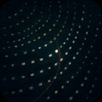

YOU
Build the lightest possible Pi web UI. Keep one sandbox, one session, and make it
excellent on mobile.

SCOTTYA message arrived while Pi was using tools. Choose how it joins the current session.
Where should this message go?Required · choose one
I’ll keep Pi as the runtime and replace only its presentation boundary. The browser will receive structured events from pi --mode rpc, so messages and tools render natively instead of as terminal cells.
The smallest robust bridge is a loopback supervisor using Node’s built-in HTTP and child-process modules. No Pican server or duplicate database is required.
The first cut keeps Pi’s existing session file authoritative and uses a bounded live replay window only for reconnects.
I’ll keep Pi as the runtime and replace only its presentation boundary. The browser will render its structured messages and tool lifecycle directly.
Pican’s strongest pattern is the dense transcript. Tasks, subagents, and workflows stay available from the session menu without shrinking the work log.
I’ll keep Pi as the runtime and replace only its presentation boundary. Messages, thinking, tools, subagents, workflows, and queued instructions become a native web work log.
Pi’s session file stays authoritative. The web layer remains small enough to understand in one sitting and cheap enough to disappear into the sandbox.